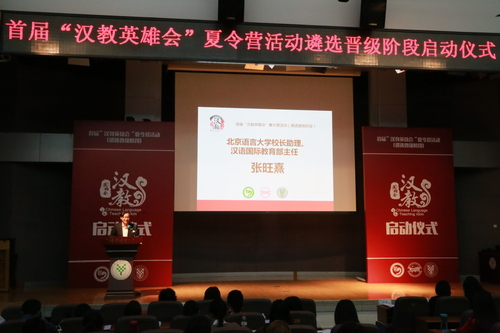
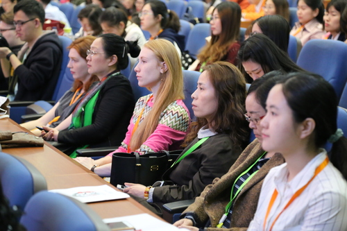
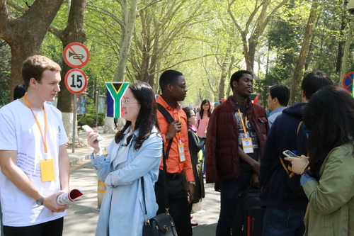
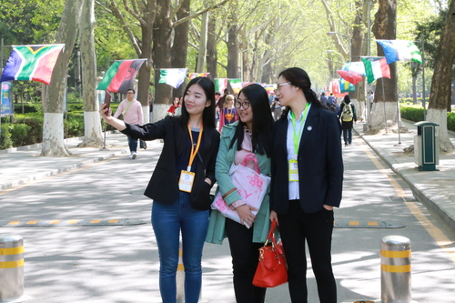
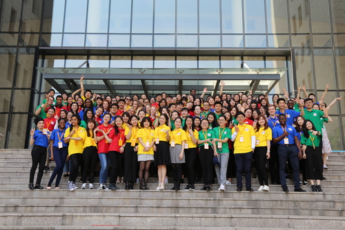

每日一篇——首届“汉教英雄会”/ 汉教新星整装待发——夏令营遴选晋级比赛在北语启动
 460
460
来源：北京语言大学-校园新闻 作者：孔院事业部
4月14日，由孔子学院总部／国家汉办与全国汉语国际教育专业学位研究生教育指导委员会共同主办,北京语言大学负责承办的首届“汉教英雄会”夏令营活动遴选晋级比赛在北语启动。我校孔子学院事业部、校团委、党委宣传部等部门携手合作，共同推动活动顺利举行。

启动仪式现场
我校校长助理兼汉语国际教育学部主任张旺熹表示，本次“汉教英雄会”遴选晋级阶段将模拟课堂教学和文化传播能力相结合，将高质量的评审标准和严要求的晋级流程相结合，既能有效地选拔中外国际汉语教学青年才俊，为汉语国际推广事业储备强大的新生力量，又能反映国际汉语教学专门人才培养理念创新和体系的日益完善，体现汉语国际推广新形势下的迫切要求。他指出，通过教学实践，提高我国汉语国际推广能力，加快汉语走向世界，是教指委的核心任务，也是每一位国际汉教工作从业者的崇高使命。这一宏伟愿景的实现，离不开国际汉语教学专门人才的选拔和培养。希望此次活动能为来自不同院校、不同国家的选手们搭建友爱和知识的交流平台，也希望国际汉语教学能为拓展中外友谊、促进世界和平、推进国外合作做出应有贡献。

参赛选手
首届“汉教英雄会”是汉语国际教育专业的国际盛会，活动分为海选阶段、遴选晋级阶段和汉教夏令营活动阶段。海选阶段，由全国16所培养院校组成的评审专家团已从全国84所院校700位中外汉语国际教育专业硕士研究生中确定前140名（80中60外）入围选手。此次遴选晋级比赛将从海选晋级的140名选手中进行集中现场遴选出50强参加6月份举办的“汉教英雄会”夏令营活动。本次50强选拔赛设置了 “模拟课堂教学”“中国文化传播”和发放“汉教英雄通关令”等环节。
在“模拟课堂教学”环节，每位选手在规定时间内利用随机抽取的教具完成备课，并通过自我介绍、说课、试讲、回答专家评委问题等内容展现教学能力、专业知识储备和跨文化教学的综合实力。在“中国文化传播”环节，我们将看到选手们精彩纷呈的才艺展示，包括唱歌、表演、演奏、相声等，应有尽有。在这一环节，选手们还将接受答艺术文化领域和教学专家们提出的各种提问。在最终环节，经过了前两轮比拼，积分排名前50的汉教英雄们将获得参加6月份夏令营活动的“汉教英雄通关令”。届时教指委网站将公布晋级人员名单。

选手交流
首届“汉教英雄会”在前两届的全国“孔子学院杯”汉语国际教育专业硕士研究生教学技能大赛基础之上应运而生。为进一步向中外观众呈现汉硕生的风采和汉教事业的前沿理念风貌，让更多的人爱上学汉语，爱上教汉语，此次“汉教英雄会”夏令营活动首次将汉语教学类比赛搬上荧幕，结合真人秀，娱乐益智类节目的展示模式，利用现代科技舞美和外出文化任务强化选手的个人魅力值和影响力。

选手参观校园
汉语联动世界，中外交流互融，民心沟通互解。目前全世界涌起汉语热和中国文化热，汉语国际教育的地位与日凸显，汉语国际教育硕士研究生专业也日益受人瞩目。截止2016年底，全国共有110所汉语国际教育硕士培养院校，共计招生35725人，其中中国学生27404人，外国留学生（包括奖学金生）8321人，有外国留学生的共有96所院校。此次参赛选手是汉语国际教育青年一代的佼佼者，他们有着丰富的个人经历，他们为了汉教梦不辞辛苦，为了让更多人了解汉语国际教育事业他们来到我们的舞台上。

合影
“小联合国”北京语言大学是一所以对来华留学生进行汉语、中华文化教育为主要任务的国际型大学，迄今为止为世界上183个国家和地区培养了16万余名懂汉语、熟悉中华文化的外国留学生，走出过联合国副秘书长、联合国日内瓦办事处总干事卡塞姆• 托卡耶夫，埃塞俄比亚总统穆拉图•特肖梅•沃图，哈萨克斯坦政府总理卡里姆•马西莫夫，俄罗斯外交部副部长伊戈尔•莫尔古洛夫，德国汉学家顾彬，美国物理学家、诺贝尔奖获得者埃里克•康奈尔等知名人士。首届“汉教英雄会”比赛选择在北京语言大学举办有重要意义，在这个舞台上，我们将会看到年轻一代中外汉语国际教育硕士的风采，感知中国语言文化的独特魅力。
在“汉教英雄会”夏令营活动遴选晋级比赛首日活动中，孔子学院事业部精心筹划，全面组织协调赛事准备工作。团委积极安排志愿者招募、培训和管理工作，共有59名志愿者加入到接待参赛选手、考务和引领工作，首日上岗的志愿者耐心负责，展现了北语人的风采，赢得老师和参赛选手的一致好评。宣传部在活动宣传策划、预热宣传和媒体接洽方面给予大力支持，吸引了人民日报、新华社、光明日报等媒体的关注和报道。各部门的协同合作保障了赛事的顺利进行，全面提升了活动的社会影响力和学校的知名度，为我校在汉语国际教育领域参与更多更高层次的合作搭建了平台。